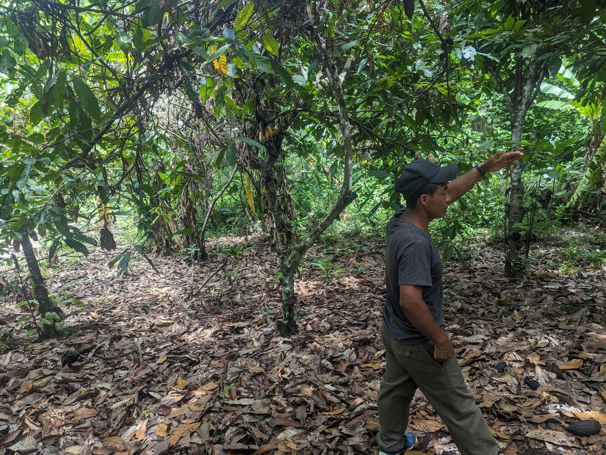

Stories /
A day of scouting property in the Peruvian jungle
Flights, mototaxis, dirt roads, a machete and long conversations.

September 2026 · 3 min read

If your idea of house-hunting is scrolling listings online, pulling up to a place in your car, and walking through a staged home with a realtor handing you a glossy brochure, forget all of it. Looking for property in the Peruvian jungle is a completely different experience. It's slower, more human, more of an adventure, and a lot more fun. Let me walk you through what a real day of scouting actually looks like.
The morning: getting there
The day usually starts early. You might catch a short flight from Lima into a regional airport like Tarapoto, watching the dry coast give way to endless green as you come over the Andes and drop into the jungle. When you land, you're not in a big anonymous city. You're in a small town where life moves at its own pace. The air is warm and thick, motorcycles buzz past, and there's fruit for sale on every corner. Right away it feels less like a business trip and more like you've arrived somewhere real.
Your ride: the mototaxi
Here's where it really stops feeling like home. Your transportation for the day probably isn't a car. It's a mototaxi. Picture a motorcycle with a little covered cab built onto the back, three wheels, open sides, just big enough for two or three people. It's the workhorse of jungle towns, and riding in one is half the fun. You feel every bump in the road, the warm air rushes past, you can smell the vegetation and wood smoke, and you wave at people as you pass.
For about the price of pocket change, your driver becomes your guide, your translator's helper, and half the time your unofficial local expert on who's selling what. You will not find this on a real-estate app.
Reaching the land
Getting to a property is rarely as simple as pulling into a driveway. You'll rattle down dirt roads that turn to mud when it rains, cross little bridges, and sometimes park and walk the last stretch on foot. And then you're actually on the land. Not looking at photos, but standing in it. You push through the brush, look for the corner markers, check whether there's water nearby, notice which way the sun crosses and where the breeze comes from.
Half the time the borders are overgrown and someone has to clear them with a machete just so you can see what you're really looking at. It's hands-on in a way that buying property back home never is.

The people are the whole thing
This is the part that surprises everyone. In Peru, especially out in the smaller towns, buying land is deeply personal. There's no central website with everything neatly listed. Deals happen through conversations: with the seller, with their family, with the neighbor who mentions his cousin also wants to sell. You sit and talk. You get asked about your family. Someone offers you fruit off a tree.
And in those conversations is where the real information lives: what the land is actually like, what the history is, who to trust, and what a fair price really is. Speaking the language and knowing the customs isn't a nice-to-have here. It's the difference between getting the local price and getting the gringo price.
Midday, and the pace of it all
Somewhere in the middle of the day you stop and eat real local food, often at a little family spot where lunch is whatever they made that morning. You're not racing between six showings on a tight schedule. A scouting day flows at the jungle's pace: you see a property or two, you talk, you eat, you follow a lead someone gave you that morning.
Things run late, plans change, a seller doesn't answer his phone and you circle back tomorrow. It can be frustrating if you're wired for American efficiency, but it's also exactly why it's worth it. The good deals aren't sitting on a website waiting. They come from being there, patiently, and knowing how the day is supposed to move.
Why this is the whole point
That's a day of scouting property in the jungle: a flight, a mototaxi, dirt roads, a machete, long conversations, good food, and a pace that rewards patience. It's an adventure, not a transaction.
But it's also exactly why having someone local matters. Someone who can read the land, talk to the sellers as an equal, spot the problems before you sign, and get you the real price instead of the tourist one. You can absolutely come experience this yourself, and you should. But you'll want someone who already knows how this dance works riding in the mototaxi next to you.